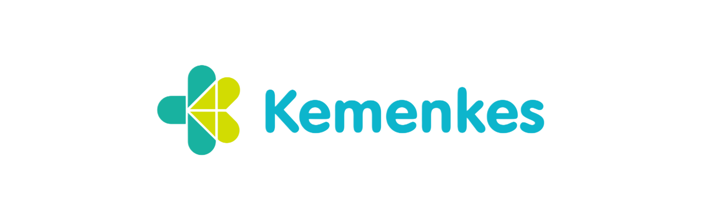

Mutu Poltekkes Kemenkes Riau
Mutu Terjaga, Layanan Terpercaya, Menuju Poltekkes Unggul



Mutu Terjaga, Layanan Terpercaya, Menuju Poltekkes Unggul
Mutu Poltekkes Kemenkes Riau berkomitmen dalam menciptakan lingkungan pendidikan dan pelayanan kesehatan yang berkualitas. Kami menjalankan program mutu berkelanjutan melalui pelatihan, audit, dan survei kepuasan demi membangun kepercayaan masyarakat.
Sejarah Mutu Poltekkes Kemenkes Riau bermula dari komitmen pemerintah dalam meningkatkan kualitas tenaga kesehatan di wilayah Riau dan sekitarnya, melalui pembentukan institusi pendidikan yang berstandar nasional dan internasional. Didirikan dengan visi menjadi pusat unggulan dalam bidang pendidikan kesehatan yang inovatif dan berorientasi pada pengembangan kompetensi praktis, Poltekkes Kemenkes Riau terus berkembang pesat sejak awal berdirinya. Dalam perkembangannya, institusi ini secara konsisten mengadopsi standar mutu pendidikan yang ketat, termasuk penerapan sistem penjaminan mutu internal dan eksternal, penguatan kurikulum berbasis kompetensi, serta peningkatan fasilitas dan tenaga pengajar yang berkualitas tinggi. Melalui sinergi dengan berbagai mitra industri dan instansi pemerintah, Poltekkes Kemenkes Riau mampu menghasilkan lulusan yang tidak hanya memiliki pengetahuan teoritis, tetapi juga mampu menerapkan ilmu mereka secara praktis dan profesional di lapangan. Keberhasilan tersebut didukung oleh komitmen institusi dalam meningkatkan mutu melalui akreditasi dan sertifikasi yang diakui secara nasional maupun internasional, serta pengembangan program-program inovatif yang sesuai dengan perkembangan teknologi dan kebutuhan masyarakat. Dengan fondasi sejarah yang kokoh dan visi masa depan yang jelas, Poltekkes Kemenkes Riau terus berupaya menjadi pusat unggulan dalam pendidikan kesehatan yang mampu memenuhi tantangan zaman dan berkontribusi signifikan terhadap pembangunan kesehatan nasional.
Pemeriksaan sistematis untuk memastikan mutu terjaga.
Peningkatan kompetensi dosen dan tenaga medis.
Menilai layanan melalui umpan balik dari civitas dan pengguna.
Poltekkes Kemenkes Riau berhasil meraih akreditasi unggul pada tahun 2025.
Baca Selengkapnya
"Lingkungan belajar sangat nyaman dan berkualitas."
"Tenaga pengajar kompeten, pelayanan prima."
"Audit mutu terstruktur, layanan makin profesional."
Email: mutu@poltekkesriau.ac.id | Telp: (0761) XXXX
Jl. Melur No. 103, Harjosari, Sukajadi, Pekanbaru, Riau
Kirim Email